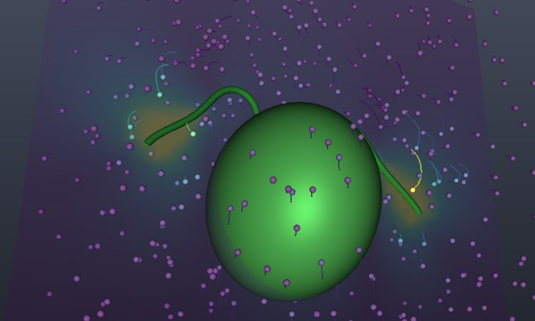

Free swimming
A model alga with two flagella
The cell beats its two flagella, and Fluidlets works out how it must move so that the total force and torque on it are zero. The result matches the swimming speed in Gallagher & Smith (2018) once the flagellum is built the same way as in the authors' own code. Tracer particles in the movie show how the flagella sweep the water.
